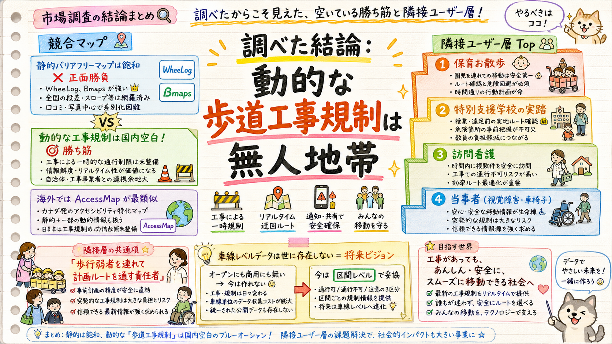

お散歩事業者の隣接層と、似た領域の既存サービス・データを調査。静的バリアフリーマップは飽和だが、「工事による歩道の“一時的”規制を動的に扱う」ことは誰もやっていない。そこが空いている勝ち筋。

正面勝負を避け、空いている所を突く。
| サービス | 対象 | 工事規制の扱い | 余地 |
|---|---|---|---|
| WheeLog!（日） | 車椅子走行ログ＋スポット | 扱わない（静的・人力投稿） | 大 |
| Bmaps／ミライロマップ（日） | 施設バリアフリー | 扱わない（施設単位・経路なし） | 大 |
| Google Maps 車椅子ルート（日） | 公共交通の車椅子ルート | 歩道工事は反映せず | 中 |
| AccessMap（米シアトル） | 歩道単位ルーティング | 工事ゾーン回避が中核 | 思想が最も近い・日本未展開 |
| NAVITIME/Yahoo/VICS（日） | 車向けカーナビ | 車道の規制は表示（歩道は非対象） | 歩行者領域は空白 |
空白地帯：(a)歩道の「工事による一時的通行規制」を動的に扱うサービスは国内に実質不在。(b)国交省の歩行空間ネットワークデータは静的属性中心で一時規制の反映は標準に無く、東京も点的整備のみ。(c)AccessMapの思想（工事回避ルーティング）を日本の歩道工事文脈に持ち込むのが最短の独自性。
共通項＝「歩行弱者を連れて、定時に、計画したルートを通す責任者」。
| 層 | 事前確認行動 | 評価・理由 |
|---|---|---|
| 特別支援学校の校外学習 | 強（制度化） | 「実踏＝下見」が文科省通知で制度化。公費予算・保育と同型で最小改修で横展開（確度70%） |
| 訪問看護・訪問介護（徒歩） | 中 | 定期反復ルート、遅延の金銭価値が明確＝事業所単位のB2B課金が成立しやすい |
| 視覚障害者・車椅子（当事者） | 強 | 事故・命に直結、確認習慣が定着。単価取りにくく自治体/福祉経由のB2B2Cが現実的 |
| フードデリバリー/配達 | 弱 | リアルタイム志向・確認習慣が弱い。初期は外す |
| 観光/ベビーカー一般 | 中 | 当事者性はあるが無料期待・単発で収益化困難 |
見落とされがちな空白：視覚障害者の「音響信号・点字ブロックの工事中断」情報は既存マップが未カバー。工事×福祉の交点は完全な空白地帯。学童・児童館の外出も保育と同型で漏れている。
結論：本物のギャップ。だが今は作れない。
| データ源 | 粒度 | 状態 |
|---|---|---|
| JARTIC オープンデータ | 区間中心・恒久規制 | 月次CSV。一時工事のリアルタイムは主対象外[仮説] |
| 東京都 建設局/保全公社 | 点/線 | 2〜3カ月更新のWeb掲載。機械可読・車線粒度ではない |
| VICS（→Google/Yahoo/NAVITIME） | 区間/点 | 非オープン・車道用。車線単位の一般開放なし |
正直な判断：「どの車線が・どの区間で」の車線粒度データはオープンにも商用にも実質存在しない＝あなたの実感するギャップは本物。だがデータが世に無い以上、自前収集（現地/画像/クラウドソース）が必要で、ハッカソン4週間では不可能。MVPは区間レベルで妥協し、車線レベルは「将来ビジョン／自主研究の到達点」として語るのが現実的。
コアは1つ、導線は層別。
束ねる：「工事×歩道規制の地図データ＋事前ルート通行可否判定」エンジンは共通化。分ける：導線を(A)事業者向けB2B（保育・特支・訪問看護＝予算/責任者あり）と(B)当事者向けB2B2C（視覚障害・車椅子＝自治体/福祉経由）に二分。フードデリバリー等は毛色が違うので初期は外す。第2の橋頭堡は特別支援学校の実踏支援が最有力。